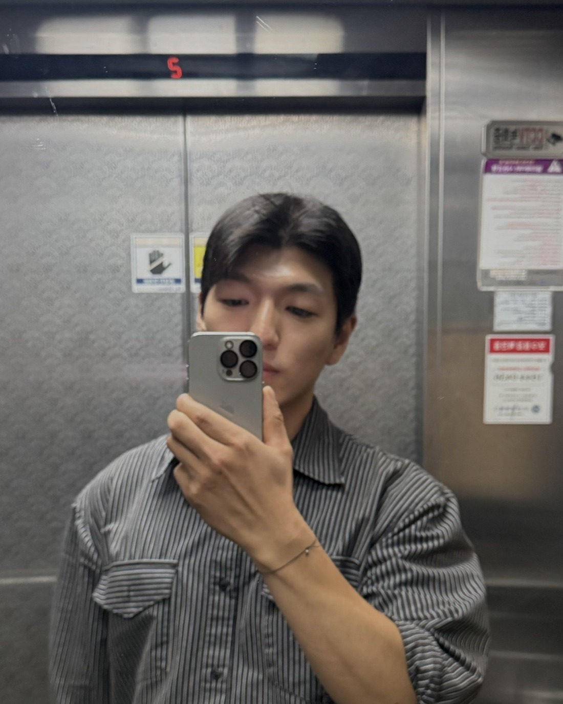

헤어지자는 말을 듣고,
그날 밤, 남자 머릿속
(괜찮은 척하던 그 남자요.)
1/14
@mszexc
넘겨보세요 →
사진 자리
편의점 봉지 · 맥주 두 캔
친구들한테 물어보면
대부분 이렇게 말해요.
"잘 됐어. 홀가분해."
2/14
@mszexc
남자들끼리 하는 말 #40
사진 자리
술잔 부딪히는 손 (얼굴 안 나오게)
남자들끼리 모이면 제일 먼저 나오는 말.
"야, 잘 헤어졌어."
"더 좋은 사람 만나."
"오늘 마시자."
3/14
@mszexc
남자들끼리 하는 말 #40
사진 자리
컵라면 · 아무 상관 없는 사진 (쉬어가는 장)
근데 이 말들은 다,
집에 가기 전까지만이에요.
4/14
@mszexc
남자들끼리 하는 말 #40
사진 자리
현관 · 불 꺼진 방
집에 들어가서 불 켜는 순간,
제일 먼저 카톡방을 열어요.
(나가지도 못하면서.)
5/14
@mszexc
남자들끼리 하는 말 #40
사진 자리
휴대폰 화면 (대화는 흐리게)
마지막 대화를 처음부터 다시 읽어요.
어디서부터 틀렸는지 찾으려고.
6/14
@mszexc
남자들끼리 하는 말 #40
사진 자리
침대에서 본 천장
그리고 이 생각 하나에서 멈춰요.
"내가 잡을 수 있었나?"
7/14
@mszexc
남자들끼리 하는 말 #40
여기서 남자는 둘로 나뉘어요.
8/14
@mszexc
남자들끼리 하는 말 #40
사진 자리
운전석 · 신호 대기
잡을 수 있었다고 생각한 남자는
며칠 안에 연락해요. 아주 짧게.
("잘 지내?" 같은 거.)
9/14
@mszexc
남자들끼리 하는 말 #40
사진 자리
빈 벤치 · 산책길
잡을 수 없었다고 생각한 남자는
연락하지 않아요.
대신 오래 남아요.
10/14
@mszexc
남자들끼리 하는 말 #40
사진 자리
출근길 엘리베이터
다음 날 아침, 둘 다 똑같아 보여요.
(멀쩡하게 출근하니까요.)
11/14
@mszexc
남자들끼리 하는 말 #40
사진 자리
카페 테이블 · 커피 한 잔
그래서 이렇게 생각하게 돼요.
"저 사람은 아무렇지 않구나."
12/14
@mszexc
남자들끼리 하는 말 #40
사진 자리
노을 · 퇴근길
아니에요.
남자는 슬픔을 밤에만 꺼내요.
13/14
@mszexc
남자들끼리 하는 말 #40

이것만 기억하세요.
남자의 이별은 밤에 오고, 늦게 와요.
그가 멀쩡해 보여도 당신이 틀린 게 아니에요.
남자가 하는 말의 뜻은 전자책 1·2권에 · 프로필 링크에서 무료로 받아보세요
14/14
@mszexc
남자들끼리 하는 말 #40